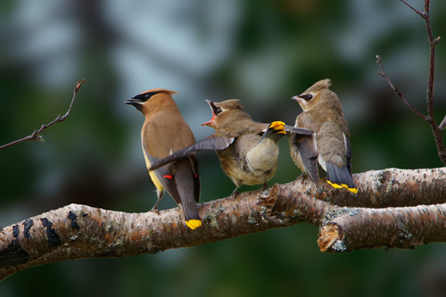

Cedar Waxwing
Bombycilla cedrorum bird

Sleek crested songbird that feeds primarily on fruit. Strongly associated with serviceberry, mountain ash, and viburnum.
10 documented plant relationships.
eats fruit of
Black HawthornCrataegus douglasii Laura Gaudette, some rights reserved (CC BY), uploaded by Laura Gaudette") Bracted HoneysuckleLonicera involucrataBunchberryCornus canadensis
Bracted HoneysuckleLonicera involucrataBunchberryCornus canadensis Douglas Goldman, some rights reserved (CC BY-SA), uploaded by Douglas Goldman") ChokecherryPrunus virginiana
ChokecherryPrunus virginiana Tom Norton, some rights reserved (CC BY), uploaded by Tom Norton") Highbush CranberryViburnum opulus
Highbush CranberryViburnum opulus Tom Norton, some rights reserved (CC BY), uploaded by Tom Norton") Pin CherryPrunus pensylvanica
Pin CherryPrunus pensylvanica giantcicada, some rights reserved (CC BY), uploaded by giantcicada") Red Osier DogwoodCornus sericea
Red Osier DogwoodCornus sericea Sam Kieschnick, some rights reserved (CC BY), uploaded by Sam Kieschnick") Saskatoon BerryAmelanchier alnifolia
Saskatoon BerryAmelanchier alnifolia Ryan Hodnett, some rights reserved (CC BY-SA)") SilverberryElaeagnus commutata
SilverberryElaeagnus commutata Western Mountain AshSorbus scopulina
Western Mountain AshSorbus scopulina
Bracted HoneysuckleLonicera involucrataBunchberryCornus canadensisChokecherryPrunus virginianaHighbush CranberryViburnum opulusPin CherryPrunus pensylvanicaRed Osier DogwoodCornus sericeaSaskatoon BerryAmelanchier alnifoliaSilverberryElaeagnus commutataWestern Mountain AshSorbus scopulina